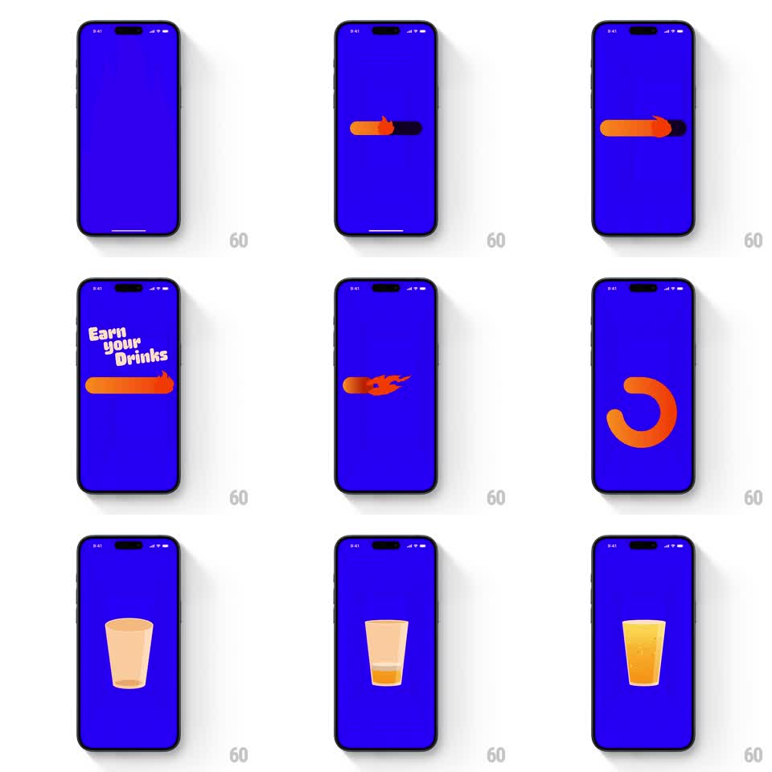

Media
Frame-by-frame

Rebuild this animation 1:1: BurnBar's intro - on an electric blue field an orange flame progress bar charges across the screen, kinetic type ("Earn your Drinks") slams in, the flame streaks and loops into the brand's C-shaped mark, and a glass fills with amber liquid.

Rebuild this animation 1:1: BurnBar's intro - on an electric blue field an orange flame progress bar charges across the screen, kinetic type ("Earn your Drinks") slams in, the flame streaks and loops into the brand's C-shaped mark, and a glass fills with amber liquid.
## Integration
Integration: stack-agnostic spec - springs given as stiffness/damping, timed motions as duration + curve; map every value to your framework and animation library of choice.
## Scene
Full-bleed electric blue screen. Cast: an orange pill progress bar with a flame head, chunky white kinetic typography, an orange C-arc logo mark, and a pint glass that fills with beer.
## Motion spec
Pattern: one-shot kinetic intro - progress-bar charge, type slam, logo loop, liquid fill.
- The flame-bar stretches left-to-right across center (width 0 -> 70%, 600ms, ease-out), its flame head flickering (scale/skew jitter at ~8Hz).
- Type slams in word by word ("Earn" / "your" / "Drinks"), each scaling 1.3 -> 1 with a hard spring (~400/18, 200ms, 120ms stagger) and a slight rotation settle.
- The bar reignites as a flame streak that whips around into the C-arc (rotation sweep 270deg, 500ms, ease-in-out).
- The glass fades in bottom-center (200ms) and fills with amber liquid rising in a smooth wave (fill 0 -> 90%, 1.2s, ease-in-out) with a foam head forming at the end.
## Calibration
- Everything moves fast and hits hard - this intro is energy, not elegance.
- The flame head stays attached to the bar's leading edge through every transform.
## Reduced motion
Bar fills without flicker (500ms), type fades in (200ms), glass fills via rising clip (800ms).
## Don't miss
- Blue field is flat and saturated; orange and white are the only other colors.
- The C-arc is the same stroke weight as the progress bar - they are one continuous shape.